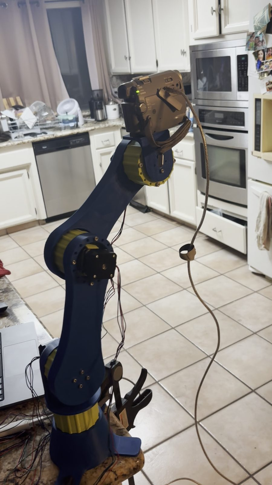
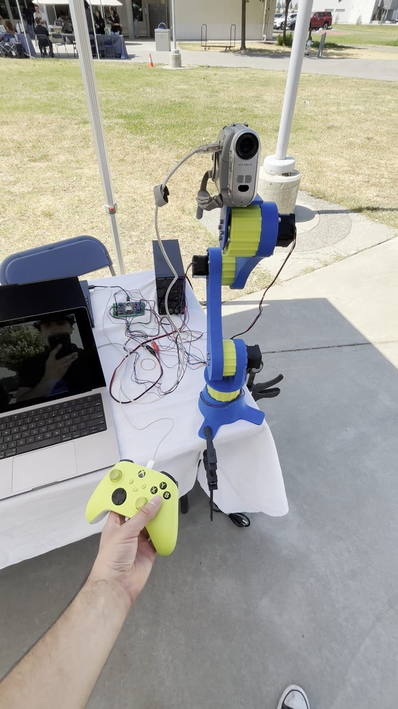

CLARK: A Four-Link Robotic Arm with Printed Cycloidal Gearboxes, Built in Five Days
Abstract. CLARK is a four-link, four-degree-of-freedom arm in which every joint is driven through a custom FDM-printed 20:1 cycloidal gearbox. An Xbox controller commands an ESP32 over UDP, which drives four NEMA17 steppers through TMC2209 drivers, open-loop. Design, printing, soldering, assembly, and debugging were completed in five days. The arm reaches about 0.9 m and lifted roughly 4.5 kg before a joint motor stalled. It became the live demonstration piece at club rush, where about 50 people signed up. The author laid out and assembled the driver board, wrote the firmware, and contributed to the gearbox design.
1Cycloidal Reduction
A cycloidal drive was chosen over planetary and harmonic alternatives because it gives high torque density and low backlash in a package that prints cleanly: a single eccentric input, a lobed disc, and a ring of pins, with no small gear teeth to lose in the FDM process. Each of the four joints carries its own custom-designed 20:1 cycloidal gearbox for torque multiplication.
2Mechanical Design
Four links, four joints, each joint a gearbox and a NEMA17. All structure and gearbox parts were printed in ABS on Bambu Lab machines. Reach is about 0.9 m (3 ft) at full extension.


3Electronics and Firmware
An ESP32 receives commands from an Xbox controller over UDP on WiFi and drives the four TMC2209 stepper drivers. Joints run open-loop on step counts: joint sensing was planned, and dropped when the build timeline made open-loop the right call for a working demonstration. The driver board was laid out and assembled by the author on protoboard with through-hole soldering. Firmware was written in the Arduino IDE.
| Subsystem | Component | Notes |
|---|---|---|
| Joints | 4× printed cycloidal gearbox, 20:1 | ABS, Bambu Lab FDM |
| Actuators | 4× NEMA17 stepper | one per joint, open-loop |
| Drivers | 4× TMC2209 | on a hand-assembled protoboard |
| Controller | ESP32 | Arduino IDE |
| Operator input | Xbox controller | UDP over WiFi |
| Reach | about 0.9 m | full extension |
| Lift | roughly 4.5 kg | before a joint motor stalled; not a formal test |
4Build and Outcome
Design, printing, soldering, assembly, and debugging were completed in five days. All four degrees of freedom were achieved and functional. The arm was then the live demonstration piece for the Engineering Renaissance Club at club rush, where about 50 people signed up; that figure counts sign-ups on the day, and fewer stayed on as members.
CLARK was the first project on which the author carried CAD, fabrication, electronics, firmware, and Gantt-chart scheduling end to end.
5Known Limitations
- Joint torque and backlash were not measured. The lift figure is the load at which one motor stalled, observed once, not a rated capacity.
- No joint position sensing; the arm has no way to detect a missed step.
- Reach and mass figures are approximate; the arm was not measured formally.
6Role and Attribution
The author laid out and assembled the driver board on protoboard, wrote the full firmware, and contributed to the cycloidal gearbox design. Club project, Engineering Renaissance Club.